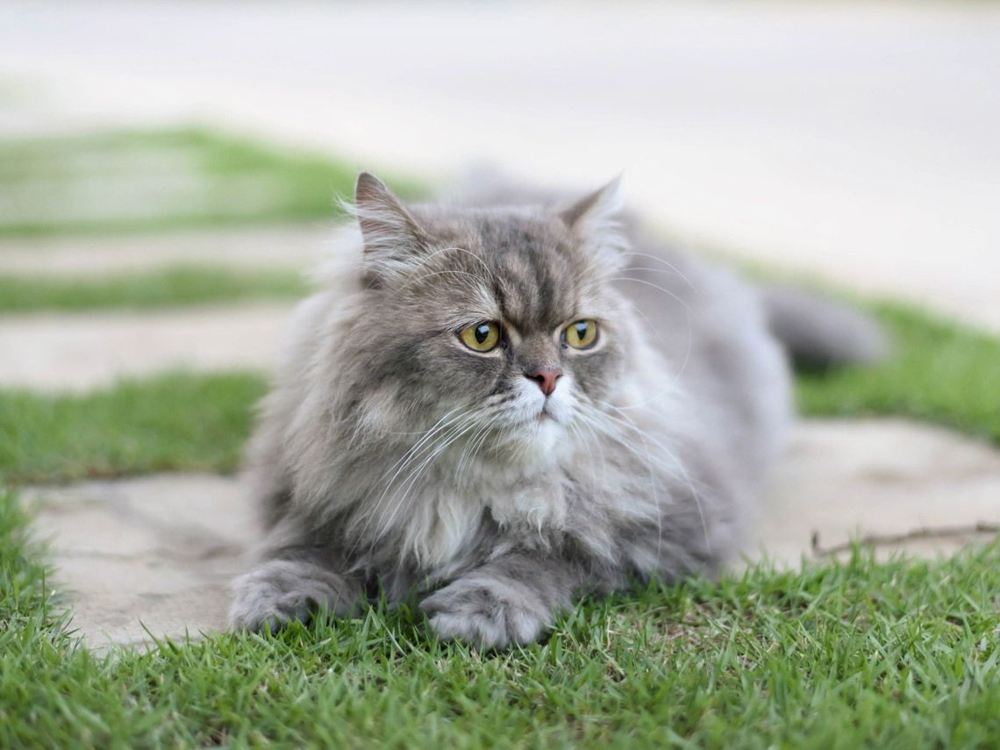
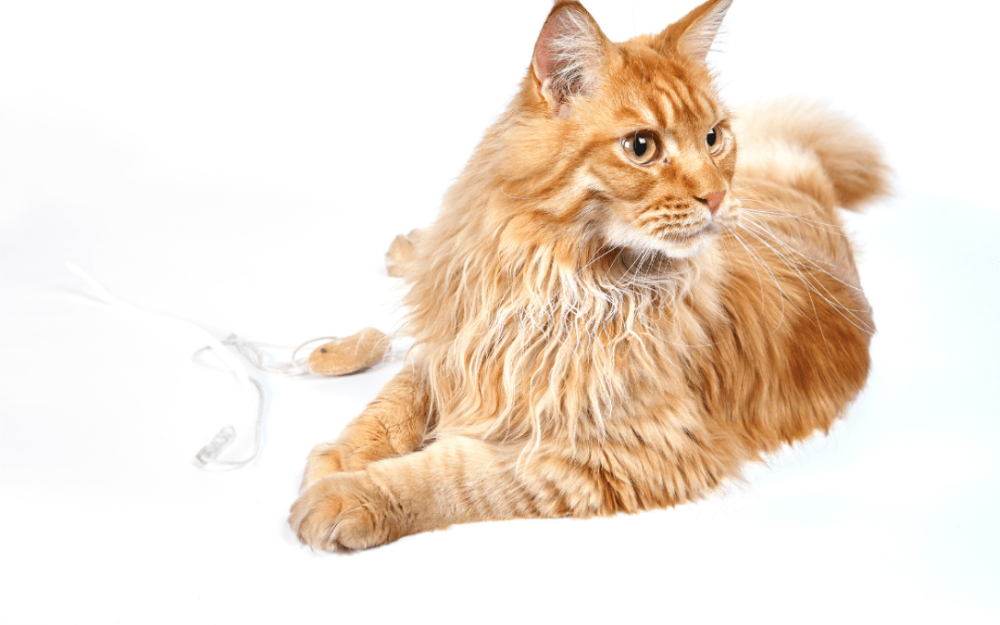
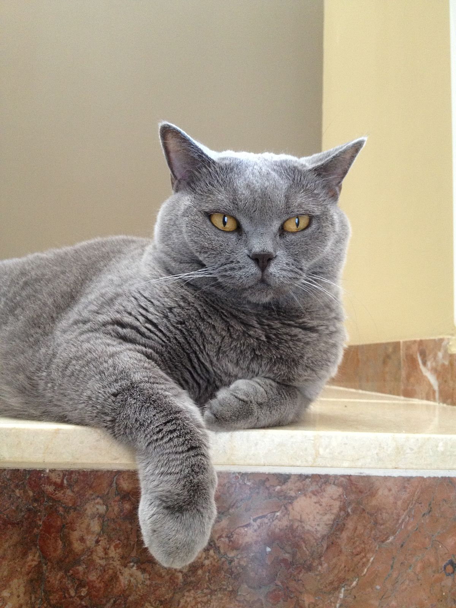
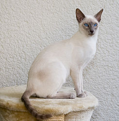
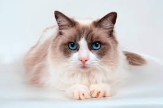
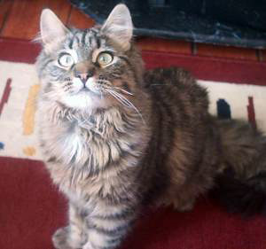
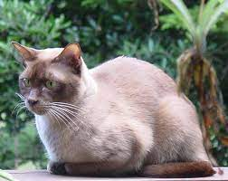
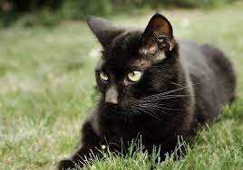

| *-*-*-*-*-*Gatos_en_adopcion*-*-*-*-*-* | ||||
| Nombre | imagen | RAZA | CABEZAS | PESO |
| Gato persa |  | es una raza de gato caracterizada por tener una cara ancha y plana y un gran abundante pelaje de variados colores. Son considerados comúnmente como gatos aristocráticos. | 2 | 2,3 a 6,8 kg |
| Maine Coon |  | raza de gato doméstico originaria de Estados Unidos, conocida por ser la raza de gato doméstico más grande del mundo. Tiene una apariencia física distintiva y valiosas habilidades de caza. | 2 | 5.9 – 8.2 kg (Adulto), 3.6 – 5.4 kg |
| British Shorthair |  | raza de gato que desciende del cruce entre los gatos que llevaron a Britania los romanos y los nativos de la isla. Estos gatos se protegen muy bien del clima británico por su pelaje doble e impermeable. | 4 | 2.3-3.0 kg |
| Gato siamés |  | raza se distinguen dos variedades: por un lado el siamés moderno, y por otro el siamés tradicional o Thai. | 2 | 2,5Kg a 4,5Kg |
| Ragdoll |  | raza de gato característica por su gran docilidad. Los Ragdolls adoran a sus dueños humanos y no les gusta estar solos. | 3 | 1.5-2.5 kg |
| Siberiano |  | gato nativo de la zona oriental de Rusia, específicamente de la fría región de Siberia y probablemente sea el resultado del cruce entre el gato europeo y el gato salvaje de los bosques siberianos. | 2 | ntre 4 y 9 kilos |
| Burmés |  | El gato Burmés es una raza de gato doméstico proveniente de Birmania, se divide en dos grupos: el gato Burmés Americano y el gato Burmes inglés o Europeo | 2 | 2-3kg |
| Bombay |  | El gato Bombay es un gato doméstico de tamaño mediano, resultado del cruzamiento entre el Burmés y el American shorthair. | 2 | 3-5 kg |